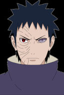

Selecione um personagem
-

- 
Naruto Uzumaki
Um jovem destemido e corajoso, com seus poderes que são reservas gigantescas de chacra graças a seu clã, somado a Biju de 9 caudas, Naruto faz jus do porque o anime tem o nome dele.